Поведение при размещении контекстного меню
Объект Popup управления отображает содержимое в отдельном окне, расположенном поверх приложения. Можно указать положение Popup по отношению к элементу управления, мыши или экрана с помощью PlacementTarget, Placement, PlacementRectangle, HorizontalOffset, и VerticalOffset свойства. Эти свойства совместной работы позволяют гибко указывать положение Popup.
Note
ToolTip И ContextMenu классы также определяют эти пять свойств и ведут себя точно так же.
Размещение всплывающего окна
Размещение Popup может быть относительно UIElement или на весь экран. В следующем примере создается четыре Popup элементов управления, относящихся к UIElement— в данном случае это изображение. Все Popup элементы управления имеют PlacementTarget свойство значение image1, но каждый Popup имеет другое значение свойства размещения.
<Canvas Width="200" Height="150">
<Image Name="image1"
Canvas.Left="75"
Source="Water_lilies.jpg" Height="200" Width="200"/>
<Popup IsOpen="True" PlacementTarget="{Binding ElementName=image1}"
Placement="Bottom">
<TextBlock FontSize="14" Background="LightGreen">Placement=Bottom</TextBlock>
</Popup>
<Popup IsOpen="True" PlacementTarget="{Binding ElementName=image1}"
Placement="Top">
<TextBlock FontSize="14" Background="LightGreen">Placement=Top</TextBlock>
</Popup>
<Popup IsOpen="True" PlacementTarget="{Binding ElementName=image1}"
Placement="Left">
<TextBlock FontSize="14" Background="LightGreen">Placement=Left</TextBlock>
</Popup>
<Popup IsOpen="True" PlacementTarget="{Binding ElementName=image1}"
Placement="Right">
<TextBlock FontSize="14" Background="LightGreen">Placement=Right</TextBlock>
</Popup>
</Canvas>
На следующем рисунке показано изображение и Popup элементов управления
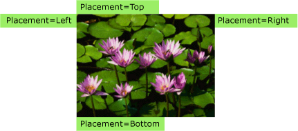
В этом простом примере показано, как задать PlacementTarget и Placement свойства, но с помощью PlacementRectangle, HorizontalOffset, и VerticalOffset свойства, у вас есть еще большего контроля над where Popup находится.
Определения терминов: Анатомия всплывающего окна
Следующие термины полезны в понимании того как PlacementTarget, Placement, PlacementRectangle, HorizontalOffset, и VerticalOffset свойства связаны друг с другом и Popup:
Целевой объект
Целевая область
Исходная точка
Точка выравнивания всплывающего окна
Эти термины предоставляют удобный способ для ссылки на различные аспекты Popup элементов управления, связанного с ним.
Целевой объект
Целевой объект является элементом, Popup связан. Если PlacementTarget свойство задано, оно указывает целевой объект. Если PlacementTarget не задано и Popup имеет родительский элемент, родительский объект — целевой объект. Если не PlacementTarget значение и отсутствует родитель отсутствует целевой объект и Popup располагается относительно экрана.
В следующем примере создается Popup то есть дочерний Canvas. В примере задается PlacementTarget свойство Popup. Значение по умолчанию для Placement — PlacementMode.Bottom, поэтому Popup отображается под Canvas.
<Canvas Margin="5" Background="Red" Width="200" Height="150" >
<Ellipse Canvas.Top="60" Canvas.Left="50"
Height="85" Width="60"
Fill="Black"/>
<Popup IsOpen="True" >
<TextBlock Background="LightBlue" FontSize="18">This is a Popup</TextBlock>
</Popup>
</Canvas>
На следующем рисунке показано, что Popup расположено относительно Canvas.
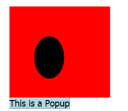
В следующем примере создается Popup то есть дочерний Canvas, но на этот раз PlacementTarget присваивается ellipse1, поэтому появится всплывающее окно под Ellipse.
<Canvas Margin="5" Background="Red" Width="200" Height="150" >
<Ellipse Name="ellipse1"
Canvas.Top="60" Canvas.Left="50"
Height="85" Width="60"
Fill="Black"/>
<Popup IsOpen="True" PlacementTarget="{Binding ElementName=ellipse1}">
<TextBlock Background="LightBlue" FontSize="18">This is a Popup</TextBlock>
</Popup>
</Canvas>
На следующем рисунке показано, что Popup расположено относительно Ellipse.
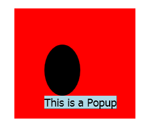
Note
Для ToolTip, значение по умолчанию Placement является Mouse. Для ContextMenu, значение по умолчанию Placement является MousePoint. Эти значения описаны дальше, в разделе "Совместная работа свойств".
Целевая область
Целевая область — это область на экране, Popup определяется относительно. В предыдущих примерах Popup выравнивается в пределах границ целевого объекта, но в некоторых случаях Popup выравнивается по другим границам, даже если Popup есть целевой объект. Если PlacementRectangle свойству, целевая область отличается от границ целевого объекта.
В следующем примере создается два Canvas объектов, каждый из которых содержит Rectangle и Popup. В обоих случаях целевым объектом для Popup является Canvas. Popup В первом Canvas имеет PlacementRectangle задано с помощью его X, Y, Width, и Height свойства, значение 50, 50, 50 и 100 соответственно. Popup Во втором Canvas имеет PlacementRectangle значение. Таким образом первый Popup находится ниже PlacementRectangle , а второй Popup находится ниже Canvas. Каждый Canvas также содержит Rectangle , имеет те же границы как PlacementRectangle для первого Popup. Обратите внимание, что PlacementRectangle не создает видимого элемента в приложении; в примере создается Rectangle для представления PlacementRectangle.
<StackPanel Orientation="Horizontal" Margin="50,50,0,0">
<Canvas Width="200" Height="200" Background="Red">
<Rectangle Canvas.Top="50" Canvas.Left="50"
Width="50" Height="100"
Stroke="White" StrokeThickness="3"/>
<Popup IsOpen="True" PlacementRectangle="50,50,50,100">
<TextBlock FontSize="14" Background="Yellow"
Width="140" TextWrapping="Wrap">
This is a popup with a PlacementRectangle.
</TextBlock>
</Popup>
</Canvas>
<Canvas Width="200" Height="200" Background="Red" Margin="30,0,0,0">
<Rectangle Canvas.Top="50" Canvas.Left="50"
Width="50" Height="100"
Stroke="White" StrokeThickness="3"/>
<Popup IsOpen="True">
<TextBlock FontSize="14" Background="Yellow"
Width="140" TextWrapping="Wrap">
This is a popup without a PlacementRectangle.
</TextBlock>
</Popup>
</Canvas>
</StackPanel>
На следующем рисунке показан результат примера, приведенного выше.
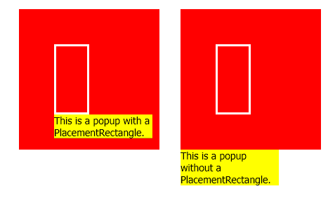
Исходная точка и точка выравнивания всплывающего окна
Исходная точка и точка выравнивания всплывающего окна являются опорными точками на целевой области и всплывающем окне соответственно, которые используются для позиционирования. Можно использовать HorizontalOffset и VerticalOffset свойства для смещения всплывающего окна из целевой области. HorizontalOffset И VerticalOffset относительны началом координат целевого объекта и точкой выравнивания всплывающего окна. Значение Placement свойство определяет, где находятся точка выравнивания всплывающего окна целевой объект.
В следующем примере создается Popup и задает HorizontalOffset и VerticalOffset свойства до 20. Placement Свойству Bottom (по умолчанию), поэтому исходная точка расположена в левом нижнем углу целевой области, и точка выравнивания всплывающего окна находится в левом верхнем углу Popup.
<Canvas Width="200" Height="200" Background="Yellow" Margin="20">
<Popup IsOpen="True" Placement="Bottom"
HorizontalOffset="20" VerticalOffset="20">
<TextBlock FontSize="14" Background="#42F3FD">
This is a popup.
</TextBlock>
</Popup>
</Canvas>
На следующем рисунке показан результат примера, приведенного выше.
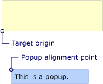
Совместная работа свойств
Значения PlacementTarget, PlacementRectangle, и Placement следует учитывать друг с другом, чтобы выяснить, правильную целевую область, исходная точка и точка выравнивания всплывающего окна. Например если значение Placement — Mouse, отсутствует целевой объект PlacementRectangle игнорируется, и целевая область находится в границах указателя мыши. С другой стороны Если Placement — Bottom, PlacementTarget или родительский элемент определяет целевой объект и PlacementRectangle определяет целевую область.
В следующей таблице описаны целевой объект, целевая область, исходная точка и точка выравнивания всплывающего окна и указывает ли PlacementTarget и PlacementRectangle используются для каждого PlacementMode значение перечисления.
| PlacementMode | Целевой объект | Целевая область | Исходная точка | Точка выравнивания всплывающего окна |
|---|---|---|---|---|
| Absolute | Неприменимо. PlacementTarget учитывается. | Экран или PlacementRectangle если он задан. PlacementRectangle Расположен относительно экрана. | Левый верхний угол целевой области. | В левом верхнем углу Popup. |
| AbsolutePoint | Неприменимо. PlacementTarget учитывается. | Экран или PlacementRectangle если он задан. PlacementRectangle Расположен относительно экрана. | Левый верхний угол целевой области. | В левом верхнем углу Popup. |
| Bottom | PlacementTarget или родительский элемент. | Целевой объект, или PlacementRectangle если он задан. PlacementRectangle Относительно целевого объекта. | Левый нижний угол целевой области. | В левом верхнем углу Popup. |
| Center | PlacementTarget или родительский элемент. | Целевой объект, или PlacementRectangle если он задан. PlacementRectangle Относительно целевого объекта. | Центр целевой области. | Центр Popup. |
| Custom | PlacementTarget или родительский элемент. | Целевой объект, или PlacementRectangle если он задан. PlacementRectangle Относительно целевого объекта. | Определяется CustomPopupPlacementCallback. | Определяется CustomPopupPlacementCallback. |
| Left | PlacementTarget или родительский элемент. | Целевой объект, или PlacementRectangle если он задан. PlacementRectangle Относительно целевого объекта. | Левый верхний угол целевой области. | В правом верхнем углу Popup. |
| Mouse | Неприменимо. PlacementTarget учитывается. | Границы указателя мыши. PlacementRectangle учитывается. | Левый нижний угол целевой области. | В левом верхнем углу Popup. |
| MousePoint | Неприменимо. PlacementTarget учитывается. | Границы указателя мыши. PlacementRectangle учитывается. | Левый верхний угол целевой области. | В левом верхнем углу Popup. |
| Relative | PlacementTarget или родительский элемент. | Целевой объект, или PlacementRectangle если он задан. PlacementRectangle Относительно целевого объекта. | Левый верхний угол целевой области. | В левом верхнем углу Popup. |
| RelativePoint | PlacementTarget или родительский элемент. | Целевой объект, или PlacementRectangle если он задан. PlacementRectangle Относительно целевого объекта. | Левый верхний угол целевой области. | В левом верхнем углу Popup. |
| Right | PlacementTarget или родительский элемент. | Целевой объект, или PlacementRectangle если он задан. PlacementRectangle Относительно целевого объекта. | Правый верхний угол целевой области. | В левом верхнем углу Popup. |
| Top | PlacementTarget или родительский элемент. | Целевой объект, или PlacementRectangle если он задан. PlacementRectangle Относительно целевого объекта. | Левый верхний угол целевой области. | В нижнем левом углу Popup. |
На следующих рисунках Popup, целевая область, исходная точка и выравнивания всплывающего окна точки для каждого PlacementMode значение. На каждом рисунке целевая область закрашена желтым, а Popup — синий.
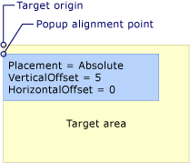
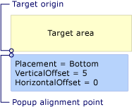
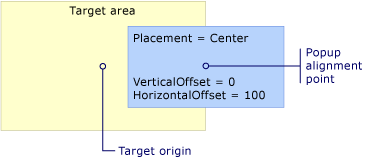
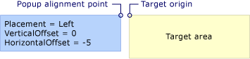
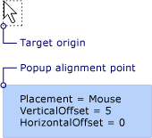
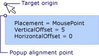
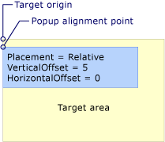
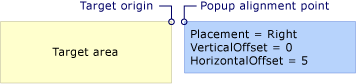
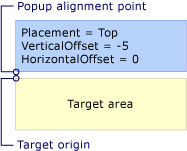
Когда всплывающее окно достигает края экрана
По соображениям безопасности Popup не могут быть скрыты за краем экрана. Одно из следующих трех действий происходит при Popup края экрана:
Всплывающее окно располагается вдоль края экрана, который мог бы скрыть Popup.
Всплывающее окно использует другую точку выравнивания.
Всплывающее окно использует другую исходную точку и точку выравнивания.
Эти параметры будут описаны далее в данном разделе.
Поведение Popup при обнаружении края экрана зависит от значения Placement свойства, а какие граница, всплывающее окно достигают экрана. В следующей таблице представлены поведения при Popup края экрана для каждого PlacementMode значение.
| PlacementMode | Верхний край | Нижний край | Левый край | Правый край |
|---|---|---|---|---|
| Absolute | Выравнивание по верхнему краю. | Выравнивание по нижнему краю. | Выравнивание по левому краю. | Выравнивание по правому краю. |
| AbsolutePoint | Выравнивание по верхнему краю. | Точка выравнивания всплывающего окна изменяется на нижний левый угол элемента Popup. | Выравнивание по левому краю. | Точка выравнивания всплывающего окна изменяется на верхний правый угол элемента Popup. |
| Bottom | Выравнивание по верхнему краю. | Началом координат целевого объекта изменяется в левый верхний угол целевой области, а точка выравнивания всплывающего окна изменяется в нижний левый угол Popup. | Выравнивание по левому краю. | Выравнивание по правому краю. |
| Center | Выравнивание по верхнему краю. | Выравнивание по нижнему краю. | Выравнивание по левому краю. | Выравнивание по правому краю. |
| Left | Выравнивание по верхнему краю. | Выравнивание по нижнему краю. | Исходная точка изменяется на верхний правый угол целевой области и точкой выравнивания всплывающего окна изменяется в верхний левый угол Popup. | Выравнивание по правому краю. |
| Mouse | Выравнивание по верхнему краю. | Началом координат целевого объекта изменяется в левый верхний угол целевой области (границы указателя мыши), а точка выравнивания всплывающего окна изменяется в нижний левый угол Popup. | Выравнивание по левому краю. | Выравнивание по правому краю. |
| MousePoint | Выравнивание по верхнему краю. | Точка выравнивания всплывающего окна изменяется на нижний левый угол элемента Popup. | Выравнивание по левому краю. | Точка выравнивания всплывающего окна переходит в верхний правый угол всплывающего окна. |
| Relative | Выравнивание по верхнему краю. | Выравнивание по нижнему краю. | Выравнивание по левому краю. | Выравнивание по правому краю. |
| RelativePoint | Выравнивание по верхнему краю. | Точка выравнивания всплывающего окна изменяется на нижний левый угол элемента Popup. | Выравнивание по левому краю. | Точка выравнивания всплывающего окна переходит в верхний правый угол всплывающего окна. |
| Right | Выравнивание по верхнему краю. | Выравнивание по нижнему краю. | Выравнивание по левому краю. | Началом координат целевого объекта изменяется в левый верхний угол целевой области, а точка выравнивания всплывающего окна изменяется в верхний правый угол Popup. |
| Top | Началом координат целевого объекта изменяется в левый нижний угол целевой области, а точка выравнивания всплывающего окна изменяется в верхний левый угол Popup. По сути, это то же самое, как и при Placement является Bottom. | Выравнивание по нижнему краю. | Выравнивание по левому краю. | Выравнивание по правому краю. |
Выравнивание по краю экрана
Объект Popup может выровняться по краю экрана путем изменения расположения, так что всего Popup отображается на экране. В этом случае расстояние между точкой выравнивания всплывающего окна, целевой объект может отличаться от значения HorizontalOffset и VerticalOffset. Когда Placement — Absolute, Center, или Relative, Popup выравнивается по каждому краю экрана. Например, предположим, что Popup имеет Placement присвоено Relative и VerticalOffset равным 100. Если нижний край экрана скрывает полностью или частично Popup, Popup выравнивается вдоль нижнего края экрана и расстояние по вертикали между началом координат целевого объекта и всплывающее окно точка выравнивания находится меньше 100. Эта ситуация представлена на рисунке ниже.
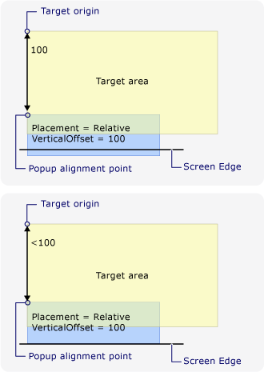
Изменение точки выравнивания всплывающего окна
Если Placement — AbsolutePoint, RelativePoint, или MousePoint, точка выравнивания всплывающего окна изменяется, когда всплывающее окно достигают нижнего или правого края экрана.
На следующем рисунке показано, что если нижний край экрана скрывает полностью или частично Popup, точка выравнивания всплывающего окна находится в нижнем левом углу Popup.
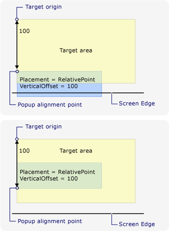
На следующем рисунке показано, что при Popup скрыт с правого края экрана, точка выравнивания всплывающего окна находится в правом верхнем углу Popup.
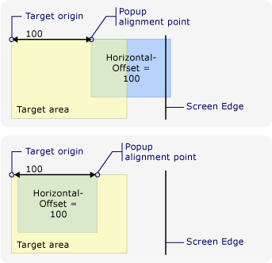
Если Popup достигает нижнего и правого краев экрана, точка выравнивания всплывающего окна находится в правом верхнем углу Popup.
Изменение положения исходной точки и точки выравнивания всплывающего окна
Когда Placement — Bottom, Left, Mouse, Right, или Top, выравнивания всплывающего окна целевой точки изменений при обнаружении края экрана. Зависит от края экрана, который вызывает изменение положения PlacementMode значение.
На следующем рисунке показано, что при Placement — Bottom и Popup достигает нижнего края экрана, исходная точка расположена в левом верхнем углу целевой области, и точка выравнивания всплывающего окна находится в нижнем левом углу Popup.
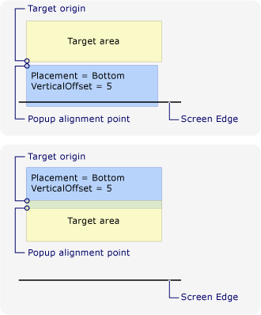
На следующем рисунке показано, что при Placement — Left и Popup встречает левый край экрана, исходная точка расположена в правом верхнем углу целевой области, и точка выравнивания всплывающего окна находится в левом верхнем углу Popup.
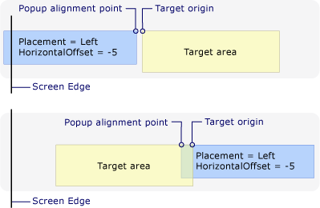
На следующем рисунке показано, что при Placement — Right и Popup встречает правый край экрана, исходная точка расположена в левом верхнем углу целевой области, и точка выравнивания всплывающего окна находится в правом верхнем углу Popup.
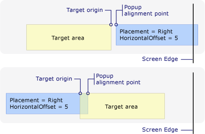
На следующем рисунке показано, что при Placement — Top и Popup встречает верхний край экрана, исходная точка расположена в левом нижнем углу целевой области, и точка выравнивания всплывающего окна находится в левом верхнем углу Popup.
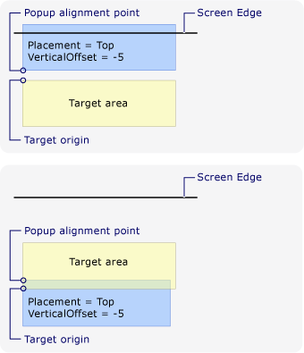
На следующем рисунке показано, что при Placement — Mouse и Popup достигает нижнего края экрана, исходная точка расположена в левом верхнем углу целевой области (границы указателя мыши), а также выравнивания всплывающего окна точка находится в нижнем левом углу Popup.
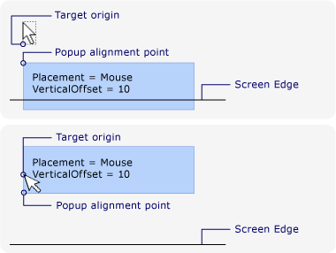
Настройка размещения контекстного меню
Точка выравнивания всплывающего окна целевой можно настроить, задав Placement свойства Custom. Затем определите CustomPopupPlacementCallback делегат, который возвращает набор возможных точек размещения и основные оси (в порядке предпочтения) для Popup. Точка, в которой отображается наибольшую часть Popup выбран. Положение Popup изменяется автоматически в том случае, если Popup скрыто за краем экрана. См. пример в разделе Указание пользовательского расположения контекстного меню.